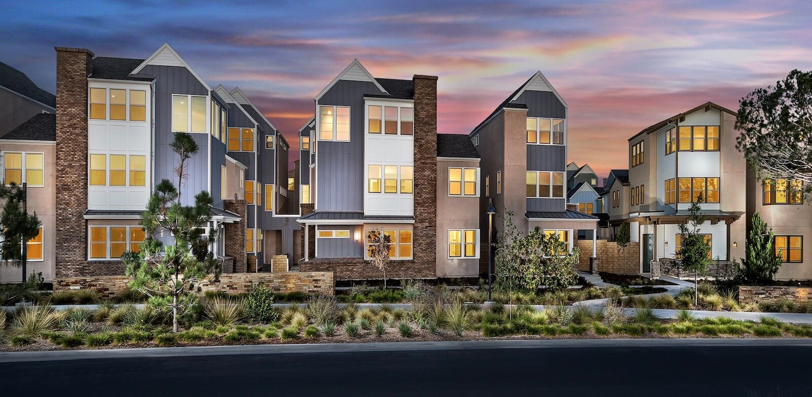

La historia del gran diseño: de la artesanía antigua a la innovación moderna
La historia del gran diseño es un recorrido que abarca milenios y refleja las necesidades, culturas y avances tecnológicos en constante evolución de la humanidad. Desde los primeros días de las herramientas artesanales hasta la era digital de las interfaces elegantes y minimalistas, el diseño siempre ha tratado de resolver problemas y, al mismo tiempo, mejorar la forma en que experimentamos el mundo que nos rodea.
En la antigüedad, el diseño estaba profundamente arraigado en la funcionalidad. Los egipcios, los griegos y los romanos creaban objetos con énfasis en la utilidad, pero también introdujeron elementos artísticos, combinando forma y propósito. Las antiguas pirámides, los templos clásicos y los acueductos romanos son símbolos perdurables de esta fusión, que muestran cómo el diseño puede ser práctico y bello a la vez.
La era del Renacimiento marcó un punto de inflexión, ya que el diseño se volvió más intencional y expresivo. Artistas como Leonardo da Vinci y Miguel Ángel no solo fueron maestros del arte, sino también de la ingeniería y el diseño. Durante este período, se puso un énfasis renovado en la simetría, la proporción y la idea del diseño "centrado en el ser humano", que sentó las bases de la arquitectura moderna y el diseño de productos.
La Revolución Industrial de los siglos XVIII y XIX supuso un cambio significativo en el pensamiento de diseño. A medida que se hizo posible la producción en masa, los diseñadores comenzaron a centrarse en la creación de productos que pudieran reproducirse a gran escala. En este período surgió el diseño funcionalista, en el que la utilidad y la eficiencia eran primordiales, lo que llevó a la creación de artículos de uso diario, como muebles, artículos para el hogar y maquinaria, que eran accesibles para la creciente clase media.
En el siglo XX, el movimiento Bauhaus revolucionó la filosofía del diseño, al abogar por la simplicidad, la funcionalidad y la integración del arte y la tecnología. Íconos como Walter Gropius y Ludwig Mies van der Rohe defendieron el principio de que “la forma sigue a la función”, que se convirtió en un principio rector del diseño moderno. Esta era también fue testigo del nacimiento de productos icónicos como la silla Eames, que combinaba comodidad, elegancia y practicidad.
Hoy en día, el diseño es más influyente que nunca y afecta no solo a los objetos físicos, sino también a las experiencias digitales. El auge del diseño de la experiencia del usuario (UX) y de la interfaz de usuario (UI) en la era digital ha desplazado el foco hacia la creación de interacciones intuitivas y fluidas entre las personas y la tecnología. Empresas como Apple, Google y Tesla han basado su éxito en la excelencia del diseño, ampliando los límites de la innovación y priorizando la satisfacción del usuario.
Al mirar hacia el futuro, la historia del gran diseño continúa inspirando a nuevas generaciones de creadores. Ya sea en la arquitectura, el diseño de productos o las interfaces digitales, los principios atemporales de belleza, funcionalidad y pensamiento centrado en el ser humano siguen siendo la base de todo gran diseño.